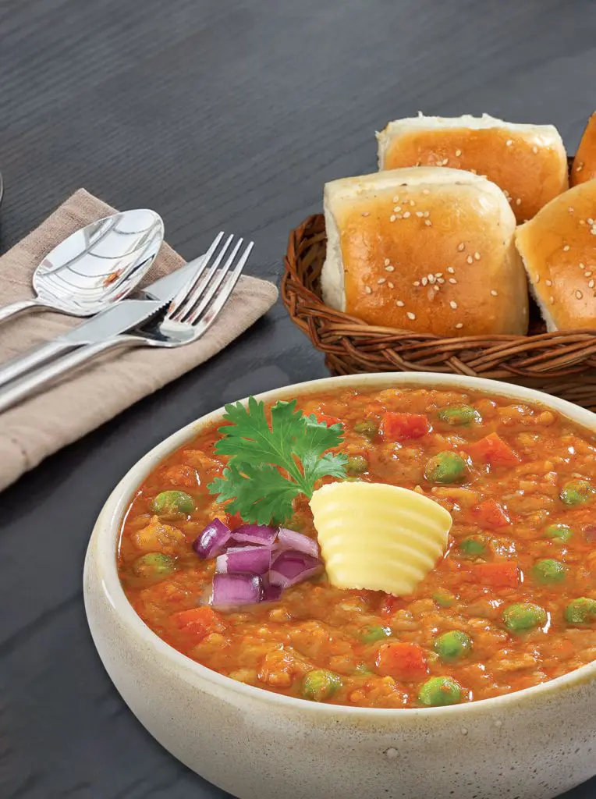

Pav Bhaji Recipe
- 2 cups mixed vegetables (peas, carrots, cauliflower, potatoes, etc.)
- 1 cup chopped onions
- 1 cup chopped tomatoes
- 1/2 cup chopped bell peppers
- 3-4 cloves of garlic, minced
- 1 inch ginger, grated
- 2-3 green chilies, finely chopped
- 2 tablespoons Pav Bhaji masala
- 1 teaspoon red chili powder
- 1/2 teaspoon turmeric powder
- 1/2 teaspoon cumin seeds
- 2 tablespoons butter
- Salt to taste
- Fresh coriander leaves for garnish
- Pav (bread rolls) for serving
Instructions:
- Boil the mixed vegetables until they are soft. Mash them coarsely and set aside.
- In a pan, heat butter and add cumin seeds. Once they splutter, add chopped onions, ginger, and garlic. Saute until onions are golden brown.
- Add chopped bell peppers and saute for a couple of minutes.
- Add chopped tomatoes and cook until they are soft and oil starts separating.
- Add Pav Bhaji masala, red chili powder, turmeric powder, and salt. Mix well.
- Add the mashed vegetables and mix thoroughly. Cook for 5-7 minutes, stirring occasionally.
- Garnish with chopped coriander leaves.
- For serving, lightly toast Pav (bread rolls) with butter.
- Serve the Bhaji with toasted Pav, lemon wedges, and chopped onions on the side.
Golgappe Recipe
- 1 cup semolina (sooji)
- 1/4 cup all-purpose flour
- 1/4 teaspoon baking soda
- 1/2 cup mashed boiled potatoes
- 1/2 cup boiled chickpeas
- 1/4 cup chopped onions
- 1/4 cup chopped tomatoes
- 1/4 cup chopped coriander leaves
- 1 teaspoon roasted cumin powder
- 1 teaspoon chaat masala
- 1/2 teaspoon red chili powder
- Tamarind chutney and mint-coriander chutney for filling
- Water for making the dough
- Oil for deep frying
Instructions:
- Mix semolina, all-purpose flour, baking soda, and a pinch of salt in a bowl.
- Add water gradually to make a smooth dough. Cover and let it rest for 30 minutes.
- In a separate bowl, mix mashed potatoes, boiled chickpeas, chopped onions, tomatoes, coriander leaves, cumin powder, chaat masala, and red chili powder.
- Divide the dough into small balls. Roll each ball into a thin disc.
- Cut small circles using a round cutter. Deep fry them until golden brown and puffed.
- Make a small hole in the center of each fried disc. Fill it with the prepared potato mixture.
- Top with tamarind chutney and mint-coriander chutney. Serve immediately.